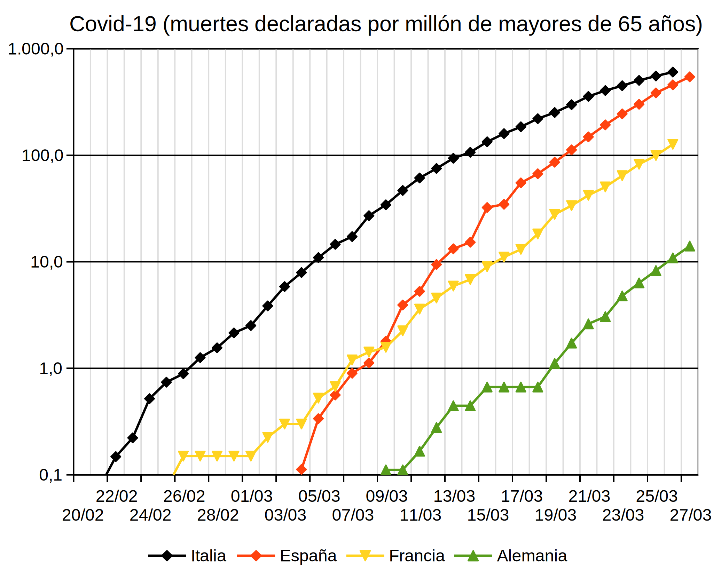

La lección Evolución del hardware muestra varios ejemplos de evolución exponencial "artificial", es decir, producida de forma intencionada (en ese caso por la industria informática) y que acaba inevitablemente llegando a sus límites físicos. En esta lección se muestra un ejemplo de evolución exponencial "natural", en el que esperamos que la intervención humana adelante su también inevitable final.
Se trata de la evolución de la epidemia del coronavirus Covid-19 que estamos sufriendo actualmente. Esta página no pretende ofrecer información ni sobre la enfermedad, ni sobre su tratamiento, ni predicciones sobre su evolución futura. Simplemente pretende mostrar los datos oficiales de una forma comprensible y analizable gracias a la representación logarítmica de los datos oficiales.
Casos declarados
La gráfica siguiente muestra los casos declarados de afectados por Covid-19 en Italia, España, Francia y Alemania en las últimas semanas:
La gráfica anterior no tiene en cuenta que cada país tiene un número de habitantes distinto, lo que distorsiona la comparación. Para corregir este problema, la gráfica siguiente muestra los casos declarados de afectados por Covid-19 en Italia, España, Francia y Alemania en las últimas semanas por cada millón de habitantes:
Muertes declaradas
La gráfica siguiente muestra las muertes declaradas por Covid-19 en Italia, España, Francia y Alemania en las últimas semanas:
Como en el caso anterior, la gráfica no tiene en cuenta que cada país tiene un número de habitantes distinto. Además, por el momento parece que las muertes se concentran en los mayores de 60 años. Por ello, la gráfica siguiente muestra las muertes declaradas por Covid-19 en Italia, España, Francia y Alemania en las últimas semanas por cada millón de habitantes mayor de 65 años, para que las comparaciones sean más significativas:

Relación entre muertes y casos
La gráfica siguiente muestra el porcentaje de muertes con respecto al número de casos declarados por Covd-19 en Italia, España, Francia y Alemania en las últimas semanas. En este caso, no es necesario corregir los datos con respecto a la población y los datos pueden compararse directamente.
En este caso la relación no es exponencial, por lo que la escala vertical no es logarítmica, sino lineal
Preguntas
Estas gráficas sugieren muchas preguntas. Algunas de ellas se dejan aquí para la reflexión del lector:
¿La evolución de la enfermedad en España permite afirmar que se han vivido cambios cualitativos en la evolución de la enfermedad?
¿Cómo se puede explicar el descenso abrupto de la relación entre muertes y casos en España y Francia en la primera semana de eclosión pública de la enfermedad en esos países?
¿Cómo se puede explicar el aumento del porcentaje de muertes en Italia en los últimos días que no se está produciendo en Francia y España? ¿Se producirá ese aumento también en España y Francia en los próximos días?
¿Con qué retraso sobre Italia se tomarán en España y Francia las mismas medidas que se están tomando en Italia si la evolución de la enfermedad continúa como hasta ahora?
Fuentes
Los datos utilizados para la creación de estas gráficas se encuentran disponibles en la Wikipedia y proceden a su vez de fuentes públicas y verificables. Espero no haber cometido errores traspasando los datos ni efectuando los cálculos, porque no es mi intención manipular los datos para demostrar ninguna tesis.
Puede descargar los datos y las gráficas en forma de hoja de cálculo de LibreOffice: covid-19.ods.